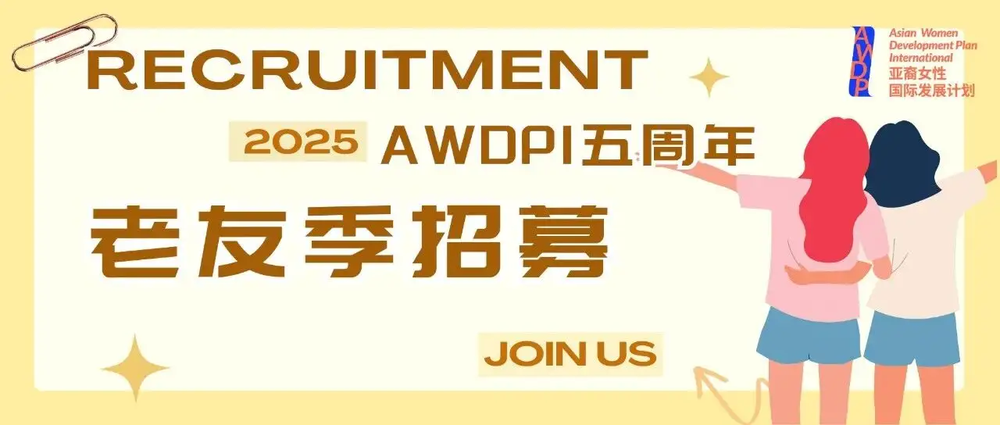
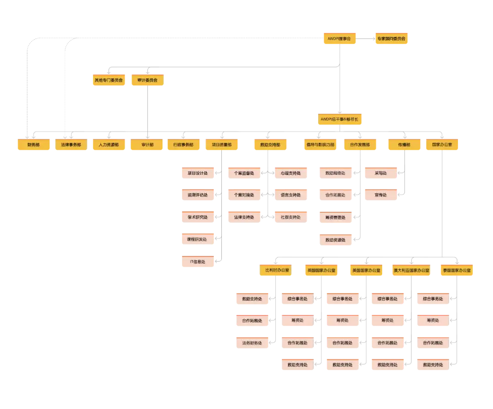

五载同行路，挚友再启程！AWDPI诚邀“老友”回归，共续亚裔女性赋能力量！
自2020年3月在比利时播下Avoice海外华人女性保护项目（Against Violence to Overseas Chinese Women Program）的第一颗种子，到2021年逐步在欧洲、北美、亚太等地的30多个国家开展工作，并陆续在美国、英国、比利时设立线下国家办公室并正式完成当地公益组织注册，2025年澳大利亚和泰国国家办公室团队正式起航，Avoice已发展为一家长期关注海外亚裔女性面临的暴力与歧视问题，致力于提供现实保护与持续赋能支持的国际公益组织——AWDPI亚裔女性国际发展计划（Asian Women Development Plan International） 。
AWDPI成长的每一步足迹，都深深镌刻着每一位曾与我们并肩同行的“老友”身影，值此AWDPI成立五周年之际，“老友季”特别招募计划正式启动， 本次招募特别面向曾在组织工作过的志愿者伙伴回归，同时也开放给符合要求的新朋友加入。让我们共同为提升海外亚裔女性福祉，助力其成长为推动社会进步的重要力量，再谱新篇。

招募计划
将对11个部门的岗位进行“老友”招募，带*的岗位为本次招募的核心岗位。
工作时间：每周至少7小时，可以灵活安排，根据部门需求和个人时间协调。
工作周期：负责人需确定在AWDPI任职至少1年，成员需确定在AWDPI任职至少6个月。
关于本次招募的具体岗位介绍可扫描文末二维码搜索岗位名称/部门名称来查询岗位的详细信息/部门所有岗位的详细信息。
招募岗位清单
救助支持部

部门介绍
救助支持部负责海外救助支持工作的具体执行，下设个案对接处、个案监督处、法律支持处、心理支持处、语言支持处和赋能支持处 ，并领导、统筹、监督各国家办公室（地区分部）的线下救助支持工作。
岗位清单
部门负责人岗
救助支持部负责人（2人）*
01 语言支持处
语言支持处-德语组成员（2人）
语言支持处-葡语组成员（1人）
语言支持处-俄语组成员（1人）
语言支持处-荷兰语组成员（4人）
语言支持处-西班牙语组成员（2人）
语言支持处-捷克语组成员（2人）
语言支持处-法语组成员（2人）
语言支持处-意大利语组成员（3人）
02 个案对接处
个案对接人员（5人）*
项目质量部
部门介绍
项目质量部下设 学术研究处、项目设计处、监测评估处、IT信息处、课程研发处共5个子部门。其中，IT信息处负责网站的设计、开发、测试以及维护，组织内部与各部门合作的日常IT支持工作等。学术研究处负责策划并实施与性别平等、反家暴、女性保护与赋能等相关主题的的学术研究，撰写研究报告及科普文章，为机构战略和项目设计提供建议与调整方向。课程研发处专注于研发反家暴相关课程、策划艺术疗愈工作坊，并建立匿名支持小组。我们希望通过 内容与技术结合，打造更实用、易参与的教育和支持方式，让更多人获得帮助。欢迎有相关背景的伙伴加入，共同探索更有效的创伤支持方式。
岗位清单
部门负责人岗
项目质量部负责人（1人）*
01 课程研发处
课程研发（内容）负责人（1人）*
课程研发（技术）负责人（1人）*
匿名支持小组负责人（1人）*
❀ 申请课程研发处相关岗位（除匿名支持小组成员外）的候选人，请随简历提交作品集。
02 IT信息处
IT前端开发顾问（1人）*
比利时国家办公室
部门介绍
比利时国家办公室是AWDPI亚裔女性国际发展计划在比利时的分支机构，在比利时开展反家暴救助、反性别暴力宣传与倡导、女性赋能等项目。
岗位清单
部门负责人岗
比利时国家办公室负责人（1人）*
01 比利时救助支持处
比利时救助支持处负责人（1人）*
比利时心理支持人员（1人）
比利时语言支持人员（法语）（1人）
比利时语言支持人员（荷兰语）（2人）
02 比利时综合事务处
比利时财务会计人员（1人）
英国国家办公室
部门介绍
英国国家办公室是AWDPI亚裔女性国际发展计划在英国的分支机构，在英国开展反家暴救助、反性别暴力宣传与倡导、女性赋能等项目。
岗位清单
部门负责人岗
英国国家办公室负责人（2人）*
01 英国筹资处
英国筹资处负责人（1人）*
02 英国合作拓展处
英国合作拓展处负责人（1人）*
美国国家办公室
部门介绍
美国国家办公室是AWDPI亚裔女性国际发展计划在美国的分支机构，在美国开展反家暴救助、反性别暴力宣传与倡导、女性赋能等项目。
岗位清单
部门负责人岗
美国国家办公室负责人（1人）*
01 美国救助支持处
美国救助支持处负责人（1人）*
美国语言支持团队负责人（1人）*
美国心理支持成员（2人）
美国法律支持成员（2人）
02 美国筹资处
美国筹资处负责人（1人）*
03 美国合作拓展处
美国合作拓展处负责人（1人）*
美国倡导与影响力团队负责人（1人）*
04 美国综合事务处
美国综合事务处负责人（1人）*
美国财务管理负责人（1人）*
澳大利亚国家办公室
部门介绍
澳大利亚国家办公室是AWDPI亚裔女性国际发展计划在澳大利亚的分支机构，在澳大利亚开展反家暴救助、反性别暴力宣传与倡导、女性劳动力、女性领导力、女性赋能等项目。
岗位清单
01 澳大利亚救助支持处
澳大利亚救助支持处负责人（1人）*
澳大利亚心理支持成员（2人）
澳大利亚语言支持成员（中英双语）（2人）
02 澳大利亚筹资处
澳大利亚筹资处负责人（1人）*
03 澳大利亚合作拓展处
澳大利亚合作拓展处负责人（1人）*
澳大利亚ins运营团队成员（1人）
04 澳大利亚综合事务处
澳大利亚综合事务成员（1人）
澳大利亚财务支持成员（1人）
澳大利亚视觉与艺术设计支持成员（1人）
❀ 澳大利亚国家办公室优先考虑线下负责人，申请澳大利亚视觉与艺术设计支持成员请随简历提交作品集
传播部
部门介绍
传播部负责传递亚裔女性生存和发展困境的声音，通过温暖的品牌设计表达女性力量，通过社交媒体矩阵与网站联动为受助女性提供发声支持，也让女性保护领域的专家专访、学术研究报告、心理与救助科普、性别视角观点得到更多的关注。
岗位清单
01 采写处
采写处成员（2人）
02 宣传处
视觉设计师（2人）*
小红书运营（1人）
Youtube运营（2人）
LinkedIn运营（1人）
❀ 申请视觉设计师时，请随简历提交作品集
合作发展部
部门介绍
合作拓展部负责组织拓展海内外合作资源，搭建合作关系网络及海外救助网络，为救助、筹资、传播等方面的工作提供合作资源支持，并依托合作关系的建立开展各类合作项目。
岗位清单
部门负责人岗
合作发展部负责人（1人）*
01 合作拓展处
合拓策划成员（学术方向）（1人）
合作拓展成员（1人）
02 筹资管理处
筹资管理处负责人（1人）*
03 救助网络处
救助网络处负责人（2人）*
倡导力与影响力部
部门介绍
倡导与影响力部负责策划、组织和推广围绕女性发展与性别平等议题的线下主题活动，通过政策倡导、媒体发声和公众参与，推动性别平等议题在更广泛的社会、政策和文化层面得到持续关注与支持。
岗位清单
部门负责人岗
倡导与影响力部负责人（1人）*
倡导与影响力部负责人（base北京）（1人）*
法律事务部
部门介绍
法律事务部负责组织总部以及各国家办公室（地区分部）的组织管治，参与制定组织各项制度并监督其实施，管控组织以及各项业务法律风险，并提供包括合同起草审查、法律研究等在内的日常法律服务支持。此外，法律事务部还将协调外部法律顾问开展工作。
岗位清单
法律合规成员（总部）（1人）
比利时法律合规成员（base比利时）（1人）*
美国法律合规成员 (base美国)（1人）*
英国法律合规成员 (base英国)（1人）*
澳大利亚法律合规成员 (base澳大利亚)（1人）*
人力资源部
部门介绍
人力资源部负责建立、建全机构内部的人力资源管理体系，通过科学的人才规划、绩效管理、评估考核，建设和培训优秀的志愿者团队。
岗位清单
01 培训团队
培训顾问（2人）
培训专员（组织文化方向）（2人）
02 招募团队
招募团队负责人*（1人）
03 绩效团队
绩效考核专员（1人）
04 员工关系团队
员工关系负责人（1人）*
专家顾问
为持续提升专业能力与战略高度，本次招募特别设立专家顾问岗，邀请在相关领域拥有【十年以上经验】的专业人士加入，为组织提供战略指导与专业赋能，定期监管并优化部门工作，而不参与日常执行。期待拥有深厚积淀的资深人士加入，共同推动组织卓越发展。
「DETAIL」
战略治理顾问
项目设计顾问
反家暴个案专家
法律合规顾问
心理支持督导
传播策略顾问
志愿者培训顾问
ESG筹资顾问
飞书数字化顾问
欢迎投递
岗位探索指南
扫描下方二维码，搜索部门名称查看该部门所有岗位信息，或搜索任一具体岗位名称查看岗位信息。
岗位投递通道
投递须知
▸ 每位申请人可选择最多3个意向岗位，为了确保您的申请投递顺利，请在上述开放的岗位中选择您的意向岗位。
▸ 截止时间：北京时间2025年10月20日
▸ 穿越迷雾指引：有任何疑问，欢迎联系邮箱[email protected]
招募流程
投递申请
01
简历筛选
02
面试
03
调剂（如需）
发送结果
* 注
1. 任一环节未通过的志愿者将自动进入下一志愿的筛选流程。
2. 若三个志愿均未通过但符合其他岗位要求：
￮ 服从调剂者：进入调剂分配流程；
￮ 不服从调剂者：视为未通过筛选。
3. 所有筛选结果（包括未通过情况）都将通过邮件正式通知：
￮ 未收到结果反馈邮件的志愿者表明其申请仍在筛选流程中；
￮ 请注意查收邮件以获取最新进展。
4. 非机构老友的申请者，将按照常规流程筛选，根据岗位要求可能会有笔试环节。
期待你的加入！
撰稿｜徐晓宁、周欣愉
排版、封面｜池一诺